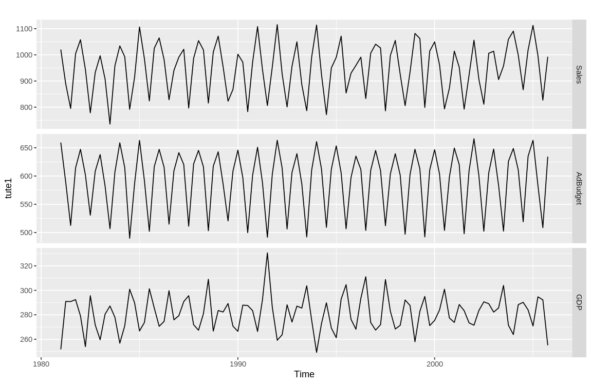
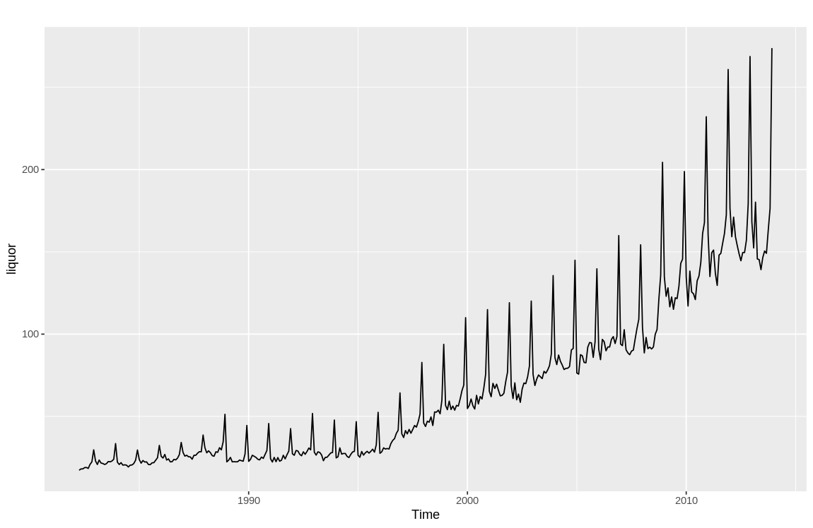
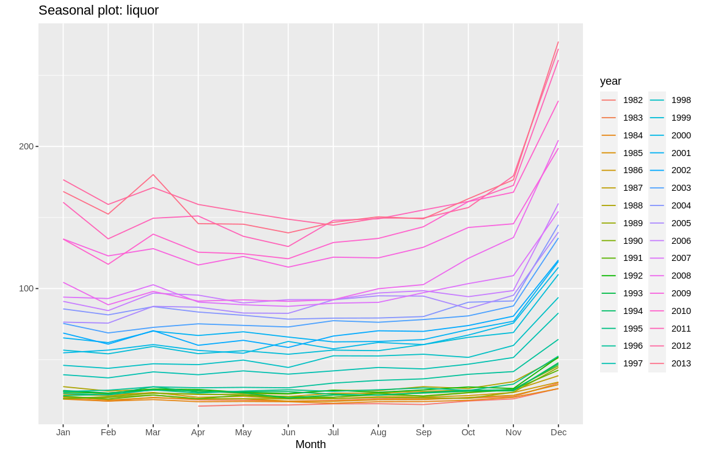
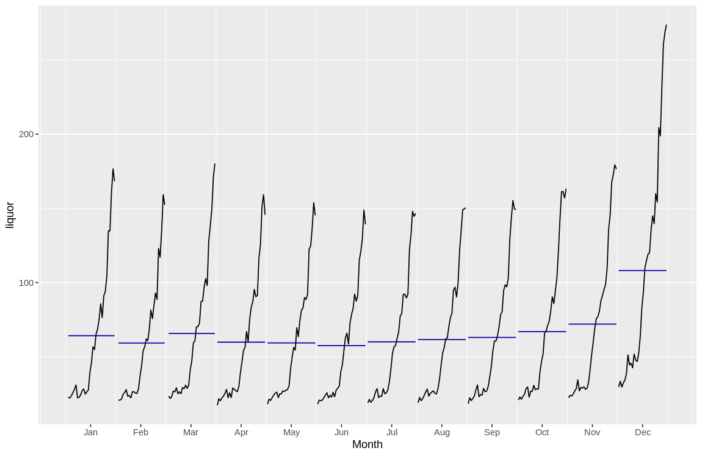
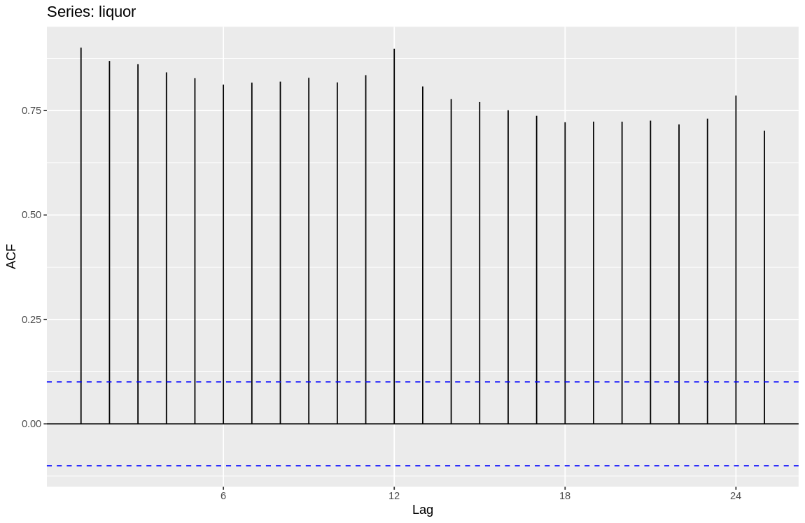
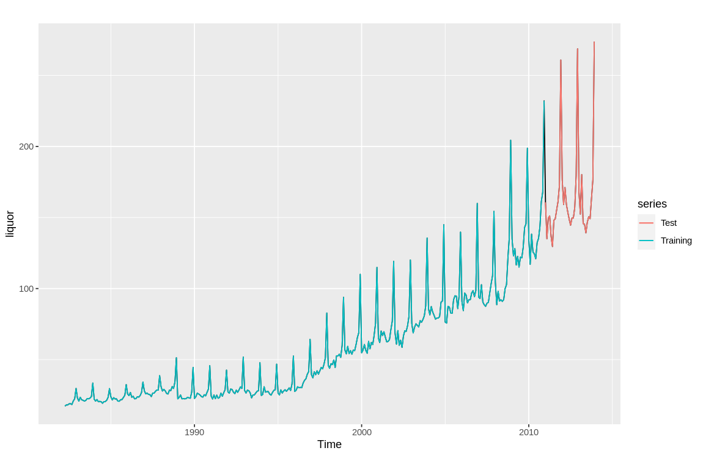

Problem 1
- We import dataset into the global env with following code
> library(readr) > tute1 <- read_csv("Downloads/tute1.csv")
- We use
autoplotthe graphically show the dataset
> tute1 = ts(tute1[,-1],start = 1981, frequency = 4) > library(fpp2) > autoplot(tute1, facets = TRUE)

now we try without facets = TRUE we have
> autoplot(tute1)

As we can see, with facets = TRUE, the image will spend different columns in different subplots. This is useful if the series having different scales.
Whereas if no parameter is passed and the default facets = FALSE is used, then it will draw different columns (series) in the same plot.
Problem 2
2.a
We import the dataset with
> retaildata <- readxl::read_excel("retail.xlsx", skip=1)
Alternatively, we can also import the data using GUI, note that we need to set Skip = 1 to drop the first row.

2.b
Now we choose column A3349414R, the turnover of Victoria liquor sales
> liquor <- ts(retaildata[, "A3349414R"], frequency = 12, start = c(1982, 4))
2.c
- we use
autoplotto view the general pattern of our data
> autoplot(liquor)

As we can see, the data is showing strong trend and seasonal features.
- we use
ggseasonplotto exam the seasonal pattern
> ggseasonplot(liquor)
The series in each year are showing seasonal pattern, sales are high during Nov. to Mar. While relatively low in the rest of the year.

- use
ggsubseriesplotandgglagplotto exam the trend in seasonal pattern
> ggsubseriesplot(liquor)

> gglagplot(liquor)

The plots compares the sales of same month, which is showing a clear upwards trend.
- use
ggAcfto exam auto-correlation
> ggAcf(liquor)

The auto-correlation of the data is significant.
Overall we can find significant seasonal characteristics in the data, as well as a strong upward trend.
Problem 3
We use BoxCox.lambda function to calculate the lambda for our transformation.
> lambda <- BoxCox.lambda(liquor) > lambda [1] -0.04159144
> liquor_transformed <- BoxCox(liquor, lambda)
The transformed data is shown as below.
> plot_data <- data.frame(year = time(liquor), liquor = liquor, liquor_transformed = liquor_transformed) > > coeff = liquor[length(liquor)] / liquor_transformed[length(liquor_transformed)] > intercept <- liquor_transformed[1] * coeff - liquor[1] > > ggplot(plot_data, aes(x = year)) + + geom_line(aes(y = liquor, color = "Original Liquor")) + + geom_line(aes(y = liquor_transformed * coeff - intercept, color = "Transformed Liquor")) + + scale_color_manual(name = "Y series", values = c("Original Liquor" = "blue", "Transformed Liquor" = "red")) + + labs(y = "Original Liquor") + + scale_y_continuous(sec.axis = sec_axis(trans = ~ (. + intercept) / coeff,name = "Transformed Liquor"))

Question 4
- split the data into training and test set
> liquor.train <- window(liquor, end=c(2010,12)) > liquor.test <- window(liquor, start=2011)
- plot the training and test set
> autoplot(liquor) + autolayer(liquor.train, series="Training") + autolayer(liquor.test, series="Test")
and we have

- calculate the seasonal naive forecast
> fc <- snaive(liquor.train) > fc Point Forecast Lo 80 Hi 80 Lo 95 Hi 95 Jan 2011 134.8 123.6507 145.9493 117.74858 151.8514 Feb 2011 117.1 105.9507 128.2493 100.04858 134.1514 Mar 2011 138.3 127.1507 149.4493 121.24858 155.3514 Apr 2011 125.6 114.4507 136.7493 108.54858 142.6514 May 2011 124.5 113.3507 135.6493 107.44858 141.5514 Jun 2011 121.0 109.8507 132.1493 103.94858 138.0514 Jul 2011 132.4 121.2507 143.5493 115.34858 149.4514 Aug 2011 135.3 124.1507 146.4493 118.24858 152.3514 Sep 2011 143.5 132.3507 154.6493 126.44858 160.5514 Oct 2011 161.2 150.0507 172.3493 144.14858 178.2514 Nov 2011 167.8 156.6507 178.9493 150.74858 184.8514 Dec 2011 232.1 220.9507 243.2493 215.04858 249.1514 Jan 2012 134.8 119.0325 150.5675 110.68565 158.9143 Feb 2012 117.1 101.3325 132.8675 92.98565 141.2143 Mar 2012 138.3 122.5325 154.0675 114.18565 162.4143 Apr 2012 125.6 109.8325 141.3675 101.48565 149.7143 May 2012 124.5 108.7325 140.2675 100.38565 148.6143 Jun 2012 121.0 105.2325 136.7675 96.88565 145.1143 Jul 2012 132.4 116.6325 148.1675 108.28565 156.5143 Aug 2012 135.3 119.5325 151.0675 111.18565 159.4143 Sep 2012 143.5 127.7325 159.2675 119.38565 167.6143 Oct 2012 161.2 145.4325 176.9675 137.08565 185.3143 Nov 2012 167.8 152.0325 183.5675 143.68565 191.9143 Dec 2012 232.1 216.3325 247.8675 207.98565 256.2143
- Calculate the accuracy
> accuracy(fc, liquor.test) ME RMSE MAE MPE MAPE MASE ACF1 Theil's U Training set 4.455255 8.699864 5.818619 6.15400 9.948117 1.000000 0.7261600 NA Test set 19.170833 22.956217 19.520833 11.59039 11.813322 3.354891 0.5801161 0.7479721
- check the residual with
> checkresiduals(fc) Ljung-Box test data: Residuals from Seasonal naive method Q* = 783.91, df = 24, p-value < 2.2e-16 Model df: 0. Total lags used: 24

as we can see from the ACF plot, the residuals are having significant auto-correlation.
the distribution graph is showing residual suffers from fat tail. The distribution is far from normal.
- now we compare the accuracy from 10%, 20%, 30%, 40% split of training, test set
index <- time(liquor) accuracy_results <- list() # Loop through different splits (10%, 20%, 30%, 40%) for (split_percentage in c(0.1, 0.2, 0.3, 0.4)) { split_index <- ceiling(length(index) * (1 - split_percentage)) liquor.train <- window(liquor, end = index[split_index]) liquor.test <- window(liquor, start = index[split_index + 1]) fc <- snaive(liquor.train) acc <- accuracy(fc, liquor.test)[2, ] accuracy_results[[as.character(split_percentage)]] <- acc } accuracy_df <- do.call(rbind, accuracy_results)
> print(accuracy_df) ME RMSE MAE MPE MAPE MASE ACF1 Theil's U 0.1 21.791667 26.223320 22.141667 12.972594 13.195524 3.893997 0.56589226 0.8766350 0.2 16.441667 22.791300 17.783333 12.956038 14.192135 3.899504 0.79441842 0.9984541 0.3 5.920833 8.718634 7.179167 6.111223 7.764106 1.675226 0.49642568 0.4649661 0.4 4.512500 6.532005 5.529167 6.100946 7.805474 1.434688 -0.02042785 0.3998734
We can observe an increase in RMSE, MAE, MPE and other accuracy measurements as the training set size increases. This is generally counter-intuitive.
- This may come from the gradual increase in the residuals.
- The residuals of the forecast in the relative old data are small and of the "new" data are large.
- Therefore including more of older data in the test set will increase the prediction accuracy instead of decreasing it.